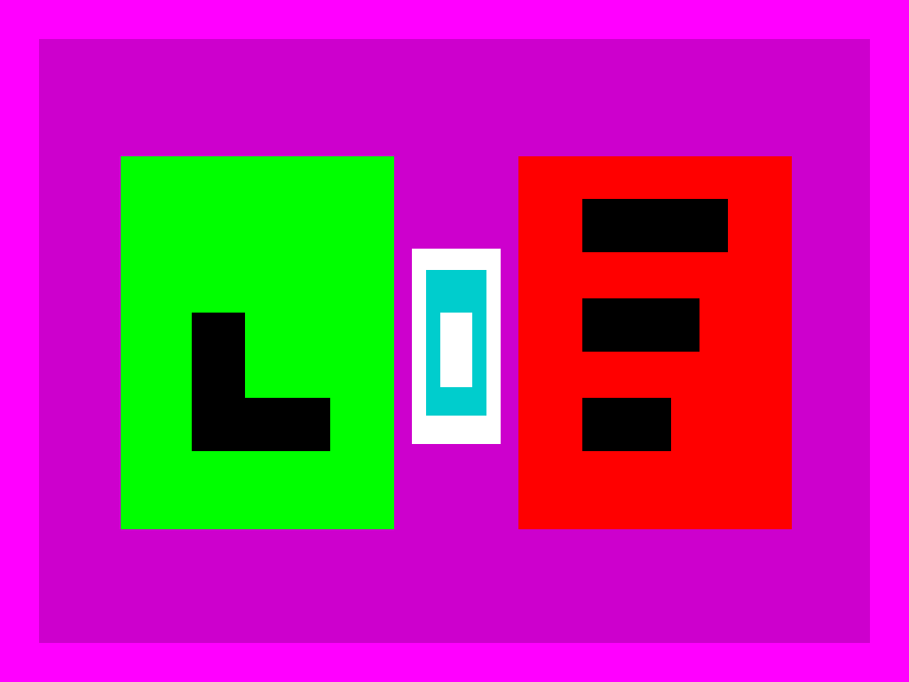

Cómo se hace

Lee cada afirmación y decide si es verdadera o falsa.
Afirmaciones sobre el ciclo
Marca V o F según corresponda.
El Sol es la principal fuente de energía del ciclo del agua.
La condensación consiste en que el agua líquida se convierte en vapor.
La nieve también es una forma de precipitación.
El ciclo del agua comienza y acaba siempre en los océanos.